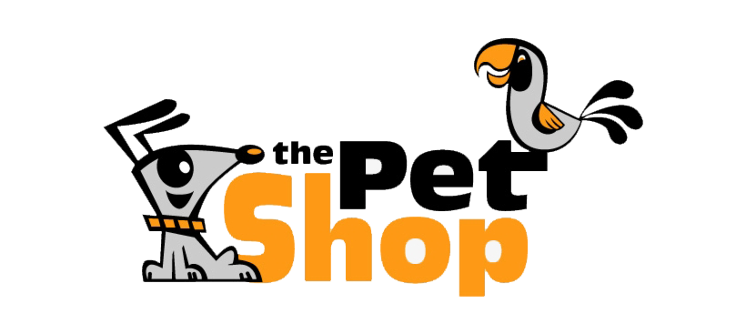

"A little bit about myself...I am a senior at Brown University, concentrating in Computer Science-Economics
joint degree. I have yet to have any work experience in the design field, but I do have experience interning as a
data science engineer at Coupang, an e-commerce unicorn, and working as an Undergrad Teaching Assistant for Brown's
Computer System's course.
If you want to connect or have any further questions, please feel free to contact me through my socials below. You
can download my resume here.
"
Mobile App design pitch idea for OrangeHealth, a startup that aims to solve healthcare insecurity in India by providing an online platform
that connects doctors and patients for online health consulting, prescription, and billing.
Focused on the usability principle of learnability where patients and doctors of all ages could easily understand and use all of
OrangeHealth's app's functionalities.
View Project
https://hidden-dawn-30177.herokuapp.com/?fbclid=IwAR2Kg68WpUDhEwk9owQTISOKC38CZKoqFCY21XIQHWhSQdeT_XiForYFNLY

https://pure-bayou-35676.herokuapp.com/
https://secret-mesa-90608.herokuapp.com/